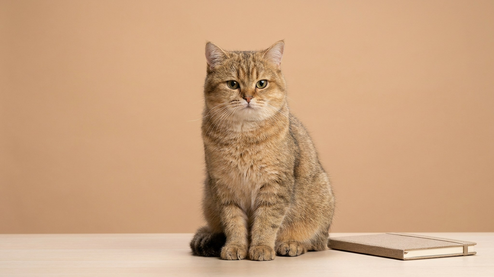

Начинается созвон — и кот демонстративно ложится на клавиатуру, а собака скулит под дверью кабинета. Это не назло: питомец видит, что вы дома, но вдруг стали недоступны, и просто не понимает правил. Хорошая новость — правила можно объяснить, и без наказаний. Ниже пять приёмов, которые возвращают тишину в рабочие часы и не обижают питомца.
🐾 У вашего питомца так же?
Расскажите в AnimaLife, как ведёт себя ваш питомец, — приложение объяснит причину и даст пошаговый план. Бесплатно, без записи к специалисту.
Разобрать свой случай → Разобрать в MAX →
У вас iPhone? AnimaLife есть в App Store
Причина почти всегда одна из трёх: скука, накопленная энергия или запрос на внимание. Когда вы сидите неподвижно и сосредоточенно, для животного это непонятная пауза — а клавиатура, бумаги и ваш взгляд в экран отлично привлекают внимание. Кот к тому же тянется к теплу ноутбука и к центру вашего внимания. Работа с причиной, а не со следствием, и решает проблему.
Самая частая ошибка — сесть за работу с невыгулянной собакой или неигравшим котом. Дайте питомцу выложиться до начала дня: активная прогулка для собаки, 10–15 минут интенсивной игры с удочкой для кошки. Уставший физически питомец большую часть рабочего дня спокойно спит, а не ищет, чем себя занять за ваш счёт.
Питомцу часто нужно не участие, а просто быть рядом. Организуйте привлекательное место у рабочего стола:
Если гладить питомца каждый раз, когда он лезет в работу, вы закрепляете именно это поведение. Переверните логику: сами устраивайте короткие перерывы на внимание и игру каждые 1–2 часа. Тогда питомцу не нужно добиваться вас — он знает, что общение будет, и спокойнее ждёт. Предсказуемость снимает большую часть навязчивости.
Дайте занятие на время созвонов: игрушку-головоломку с кормом, долгоиграющее лакомство, новую картонную коробку. А вот чего избегать: не кричать и не сбрасывать кота со стола — для него это либо игра, либо стресс, и поведение только закрепляется. Не запирать резко в другой комнате без подготовки — это рождает скулёж и тревогу. Границы работают, когда питомцу есть куда деть энергию и внимание, а не когда его просто отгоняют.
Материал носит информационный характер и не заменяет очную консультацию ветеринара.
🐾 Хотите понять, что питомец говорит вам?
Опишите ситуацию или пришлите видео в AnimaLife — AI разберёт поведение вашего питомца и подскажет, что делать. Бесплатно, ответ за минуту.
Разобрать поведение → Разобрать в MAX →
У вас iPhone? AnimaLife есть в App Store
🐾 Понравился разбор?
Подпишитесь на канал — каждый день разбираем по одному тревожному симптому у кошек и собак: что в пределах нормы, а когда пора к врачу. Подпишитесь, чтобы не пропустить разбор, который может спасти здоровье вашего питомца.